Copyright © This course contains materials from "Survivability and Information Assurance" (copyright 2005 Carnegie Mellon University) with special permission of the Software Engineering Institute at Carnegie Mellon University.
- Table of Contents
- 1. Principle 7: Security Knowledge in Practice (SKiP) Provides a Structured Approach
- 2. Reading Assignments
- 3. Security Knowledge in Practice (SKiP) Provides a Structured Approach
- 4. Learning Outcomes
- 5. Topics
- 6. Topics
- 7. Best Practice vs. Best Practical
- 8. Topics
- 9. Vendor Provides
- 10. Installing Vendor Patches
- 11. Air-Gapped Test Environment
- 12. Installing the System
- 13. Topics
- 14. Harding/Security/
- 15. Configuration Management
- 16. Topics
- 17. Prepare
- 18. Topics
- 19. Detect
- 20. Topics
- 21. Respond
- 22. Topics
- 23. Improve
- 24. Topics
- 25. Repeat
- 26. Summary
- 27. Exam
1. Principle 7: Security Knowledge in Practice (SKiP) Provides a Structured Approach

The Security Knowledge in Practice (SKiP) Method defines a continuous process for establishing and sustaining the security of a critical information asset. One example is the traditional computer system-part of an SFU-that runs mission critical applications. In addition, the SKiP Method can be applied to the architecture of a network, the systems that comprise a sub-infrastructure (e.g., the collection of computer systems that provide electronic mail or remote access services), and computers installed at home.
This module should take about 5 hours.
The required reading must be done in advance of this class and students will be quizzed on the materials.

2. Reading Assignments
Required readings:
Guidelines on Firewalls and Firewall Policy - (http://csrc.nist.gov/publications/nistpubs/800-41-Rev1/sp800-41-rev1.pdf)
Securing Network Servers - (http://csrc.nist.gov/publications/nistpubs/800-123/SP800-123.pdf)
Guidelines on Securing Public Web Servers - (http://csrc.nist.gov/publications/nistpubs/800-44-ver2/SP800-44v2.pdf)
Recommended readings:
"Information Technology-Essential But Vulnerable: How Prepared Are We for Attacks?" - http://www.gpo.gov/fdsys/pkg/CHRG-107hhrg80481/pdf/CHRG-107hhrg80481.pdf [Pethia 01]
See Cyberciti "How Linux File Permissions Work" - (http://www.cyberciti.biz/faq/how-linux-file-permissions-work/)
"UNIX Security Checklist, v3.0" - (http://www.auscert.org.au/render.html?it=1935&cid=1920)
Truecrypt - (http://www.truecrypt.org)
Encfs (http://www.arg0.net/encfs)
Bitlocker for Windows (http://windows.microsoft.com/en-US/windows-vista/BitLocker-Drive-Encryption-Overview).
Detecting Signs of Intrusions [Allen 00a] - (http://www.sei.cmu.edu/library/abstracts/reports/98sim001.cfm)
Forensic Discovery - (http://www.porcupine.org/forensics/forensic-discovery/)
Computer Security Incident Handling Guide - (http://csrc.nist.gov/publications/nistpubs/800-61-rev1/SP800-61rev1.pdf)
"Bypassing Integrity Checking Systems" - (http://www.phrack.org/issues.html?issue=51&id=9)

5 hours. This is an important topic so time spent here is time well spent.
The SKiP Method is a way to administer computer systems and can be applied from cradle to grave. It was designed to be process oriented rather than task oriented and is a benefit to the novice SA as well as the seasoned professional. The key is that the SA should know where they are in the method at all times. If they know where they are, they will know what they should be doing and their time and effort can be channeled appropriately.
SKiP came to be when we at the CERT Training and Education Center wanted to make the wealth of information in the CERT Security Improvement Modules available to a broader audience. By defining a process, we intended to ground novice system administrators in a method for managing their computer systems to help them address tasks that they might not have otherwise known they faced.
SKiP was originally designed to address the task of administering computer systems. Along the way, we learned that it is also applicable to routers and firewalls (which are basically stripped down computer systems) and the architecture of a network.
This set of lectures explains the SKiP Method and how to apply SKiP to a computer system. There are few exercises here. Instead, in "Sustaining, Improving, and Building Survivable Functional Units (SFUs)", the SKiP Method is demonstrated on one of the computer systems in the enterprise. Students then follow the SKiP Method steps when they re-engineer the computer systems and network infrastructure components that are part of the Functional Units assigned to their group.
The SANS reading room (http://www.sans.org/reading_room/" has numerous papers and tutorials that address the areas discussed in this lecture. Students should review the website to become familiar with the various topics and subject matter available on the site. It will be an invaluable source during their studies and as they advance through the SIA curriculum. The available papers on the SANS site are always being updated as more security professionals become certified in the various certification tracks available on their site (http://www.giac.org/).
In the mean time, there are sections in the text bracketed by markers that list representative technologies that support the SKiP Method step being described. These are included in an attempt to satisfy the technology cravings of the students who want to know more during this course. The markers are denoted as follows:


At this time, there is not the wealth of technology to carry out all of the steps of SKiP, particularly in the Prepare step with respect to Characterization. While there are mature applications available for characterizing changes to files and folders (e.g., OSSEC), when it comes to characterizing process behavior and the kernel, there are few candidates. It is important to highlight this fact and to encourage students to be on the lookout for new applications that may help them do these characterizations. I encourage you, the instructor, to do this also and use the applications that you discover to augment the Technology Timeout information presented herein. The students need to know what tasks they need to address and the nature of the applications that will help them, even if specific implementations are not yet available.

3. Security Knowledge in Practice (SKiP) Provides a Structured Approach
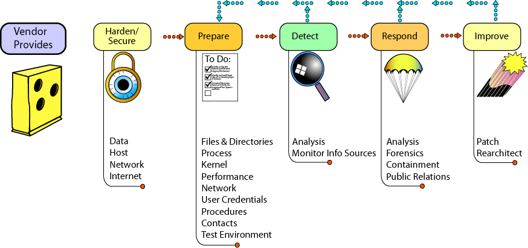
The SKiP Method is a new way to think about system administration. Unlike previous system administration methods, the SKiP Method defines seven specific and ordered steps, and the actions to be taken at each step. Once the SA is comfortable with the SKiP Method and its steps, these steps are repeated over and over for the life of the system to which they are applied.
The SKiP Method was designed to organize information security practices published on the CERT Web site1 into a more contiguous process-based approach, departing from the more common problem-based approach. The process diagram shows the sequence of activities that comprise SKiP.
For the less experienced SA, SKiP gives a roadmap of the major tasks to build and sustain the security of a system. For more experienced SAs, SKiP provides an ordered arrangement and a checklist of practices, allowing administrators to identify gaps in the tasks they are already performing.
The SKiP Method is a method for initially securing and subsequently sustaining the security state of an information asset. The following are example assets:
Systems running mission critical applications
Network infrastructure components including routers, hubs, switches, etc.
Subsystems or subnetworks such as those providing e-mail services, Web content production and delivery services, perimeter protection services, etc.
A network architecture and topology
Sensitive or proprietary information such as customer data or financial projections
Computer systems installed at home
This module explains how the SKiP Method is most often applied to a computer system and gives practical advice on how to apply it.
4. Learning Outcomes
Define the purpose of the SKiP Method
Describe the benefits of using the SKiP Method
Identify the steps in the SKiP Method, the transitions, and the practices in each step
Students will be able to perform the tasks listed above when they have completed this section of the course.
The SKiP Method is a continuous process used by an SA for administering computer systems throughout its lifetime. At the conclusion of this segment of "Principles of Survivability and Information Assurance", you will be able to do the following:
Define the purpose of the SKiP Method
Describe the benefits of using the SKiP Method
Identify the steps in the SKiP Method, the transitions, and the practices in each step
The SKiP Method is important because it is the method used to manage the computer systems that make up the Survivable Functional Units (SFUs) that will be identified in "Sustaining, Improving, and Building Survivable Functional Units (SFUs)" will be managed. Survivable Functional Units are described in Principle 6: Survivable Functional Units (SFUs) are a helpful way to think about an enterprise's networks.
5. Topics
Best Practive vs. Best Practical
Vendor Provides
Hardening/Securing
Characterizing
Files and Folders
Network Activity
Kernel
Processes
Detect
Respond
Improve
Repeat
The purpose of the SIA Curriculum is to teach system administrators how to manage an existing network of cooperating computer systems and network infrastructure components according to the ten principles described in "Principles of Survivability and Information Assurance". Most SAs will find themselves in this type of a situation in their professional career, that is, they will inherit an existing enterprise network and be charged with managing it using these principles.
To manage the computer systems and network infrastructure components in those existing enterprise networks, Principle 6: Survivable Functional Units (SFUs) are a helpful way to think about an enterprise's networks, described the concept of Functional Units and how to make them more robust and reliable using survivability engineering.
In this part of the curriculum, we carry the concept of survivability (Principle 1: Survivability is an enterprise-wide concern) down to the infoproc (computer system, router, and firewall) level. This set of lectures defines and explain the SKiP Method of system administration.
6. Topics
Best Practive vs. Best Practical
Vendor Provides
Hardening/Securing
Characterizing
Files and Folders
Network Activity
Kernel
Processes
Detect
Respond
Improve
Repeat
7. Best Practice vs. Best Practical
In the best of all possible worlds, the "right" computer system, matched with the "right" operating system and the "right" application would constitute the best practice for building and installing a computer system or a network infrastructure component that are part of an SFU. For example, if a Dell server running the Red Hat Linux operating system and using the Apache Web Server is the best possible environment for hosting a Web server, then SAs should be proficient in both making this recommendation/decision and installing and operating such a system. In addition, the SAs' managers need to be willing to allow their administrators to learn about the best technology practices and support their decisions through technology purchases.
With this kind of knowledge, SAs would be free to make the best choices when selecting hardware and software technology. Principle 8: The road map guides implementation choices (all technology is not equal), choices describes a framework for making these choices.
However, what often happens is that skill sets and existing capital investments drive new hardware and software purchases. Best practice becomes the "best practical" solution. The best practical solution is one that is practical given the enterprise's constraints.
SKiP is a method to help manage computer systems that are part of SFUs (Principle 6: Survivable Functional Units (SFUs) are a helpful way to think about an enterprise's networks) in a practical setting. It extends the concept of survivability (Principle 1: Survivability is an enterprise-wide concern) to the infoprocs level. The decision to install and operate an application suite running under an operating system on a specific piece of hardware that support the functions of the SFU has already been made. It's now time to make the technology do what it was purchased to do and to do it in a survivable fashion.
8. Topics
Best Practive vs. Best Practical
Vendor Provides
Hardening/Securing
Characterizing
Files and Folders
Network Activity
Kernel
Processes
Detect
Respond
Improve
Repeat
9. Vendor Provides
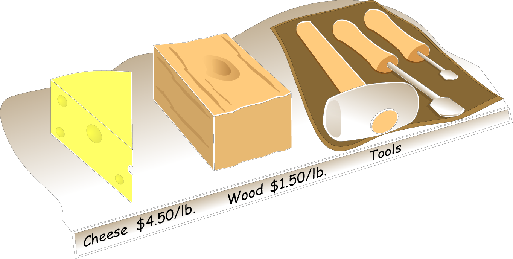
At this point, it's important for the students to understand what the vendors provide in the systems that they ship these days. The vendors' goals differ significantly from SA's goals. It seems as though the vendors seek to have customer support telephone/e-mail/Web interactions be virtually nil, and they seek to achieve that by selling fully functional systems that "work" in almost all settings. The customer opens the shipping boxes, installs the software, and everything just works.
SAs who are in tune with survivability and information assurance issues want something different. They need to improve the survivability of the systems they install. To do this, they need to apply a method such as the SKiP Method to the computer systems and network infrastructure components that their enterprise purchases.
The scales are tilting slowly toward more secure systems as distributed by the vendors. SAs are getting some relief but not enough yet so that they can rest easy. There's still a lot that needs to be done to the computer systems and network infrastructure components that vendors provide to make them sufficiently survivable in today's enterprise network.
This section talks about what the vendors provide to their customers.
The decision has been made. The SFUs (Principle 6: Survivable Functional Units (SFUs) are a helpful way to think about an enterprise's networks) have been designed to meet the needs of the enterprise's mission. From this design, specific applications running under specific operating systems on specific computer systems have been identified, purchased, delivered, and are now awaiting installation and tuning at the hands of the SA. That's the easy part.
The hard part - or perhaps merely harder - is actually doing the work in a way that promotes the survivability of the organization's mission and assuring that the information provided by those applications running on the SFU's computer systems are properly managed. The SKiP Method is a method that defines a process that system administrators can use to improve organizational survivability and information assurance at the infoprocs level.
This process begins by clearly recognizing what an organization really gets when they purchase a computer system in today's market.
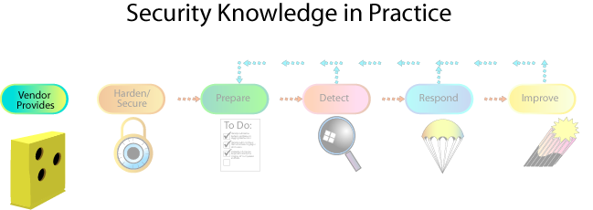
You get what you pay for. Again, it's important to know what the vendors are selling and what you're buying.
Vendors sell computer systems and network infrastructure components that their customers will buy. In most cases, these products are general purpose, meaning that they are fully featured with all or most of the software enabled for ease of use. They are meant to satisfy everyone's needs, including a few they didn't realize they had.
Such systems frequently contain the following:
services that are unneeded, unwanted, and most often insecurely configured
little or no protections on access to data objects such as files and directories
ease-of-use features often provided at the expense of security
vulnerabilities that intruders can use to break into systems
The Swiss cheese icon highlighted in the SKiP Method diagram is intended to convey the idea that computer systems and network infrastructure components as distributed by the vendors often contain holes. While few if any people ever fill the holes in Swiss cheese, SAs must fill those holes if they intend to build and maintain computer systems and network infrastructure components that are part of SFUs.
|
Raw Materials Some tools for crafting "One size fits all" mentality Responsibility likes with SAs |
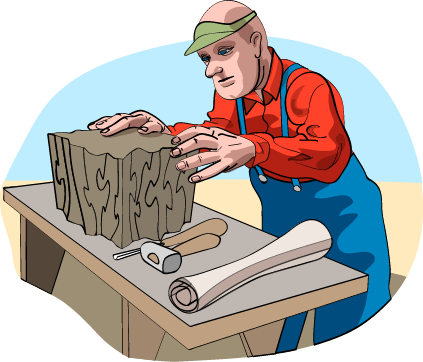 |
This section uses an analogy likening a computer system to a piece of wood. The applications distributed with that computer system and network infrastructure components are the hammers, wood chisels, and other applications used by SAs to shape that piece of wood to fit its use in the SFU in the enterprise.
While some of these applications are needed for the system to even function, many others are provided to accommodate the demand for an "any-purpose" computer system. This "one size fits all" mentality is precisely what we are asking vendors for by purchasing their products and by not asking for something different, (i.e., a product that operates securely). Once SAs and other customers start demanding a more secure system product-that is, voting with their dollars-the responsibility for adjusting the "shape" of the product will shift from the SA to the vendor.
In the meantime, the SAs' role is to identify the tasks that will be performed by the computer system or network infrastructure component and then determine the necessary (minimum essential) functions needed to meet the organization's goals, eliminating those that are unnecessary. In many respects, the design of the SFU has defined the functions that the computer system or network infrastructure component should perform.
Shaping a computer system or network infrastructure component to meet the needs of the SFU in the enterprise is challenging, especially for the novice. The SKiP Method makes this security task more orderly and manageable. It helps SAs to keep their focus on the job at hand, namely installing and operating a computer system or network infrastructure component that is part of an SFU that supports the mission of the enterprise.
To better understand the types of products that vendors provide these days, read the following excerpt from Rich Pethia's September 26, 2001 Congressional Testimony [Pethia 01], in which he comments on the state of software systems developed and sold in today's market. Please note that this statement given by Rich Pethia, Director of the CERT, to Congress was in "2001." The CERT stopped publishing their vulnerability statistics, but at last count they cataloged 6,508 vulnerabilities in 2008 (http://www.cert.org/stats/). In a testimony to congress by Dr. Greg Shannon, Chief Scientist for the CERT, Software Engineering Institute, Carnegie Mellon University, on July 24, 2011 he reported the CERT cataloged approximately 250,000 "malicious artifacts." The testimony below, by Rich Pethia, is left here to emphasis the points he make regarding the state of the security of software and the need for vendors to incorporate security in their development processes. Some vendors have been taking a proactive approach to security and redesigning their software with strong security features and controls enabled by default. Have a look at the vulnerabilities listed in BugTraq to further point out the problems of the same vulnerabilities affecting software.
Vulnerability of Technology
Last year (2000), the CERT/CC received 1,090 vulnerability reports, more than double the number of the previous year. In the first half of 2001, we have already received 1,151 reports and expect well over 2,000 reports by the end of this year. These vulnerabilities are caused by software designs that do not adequately protect Internet-connected systems and by development practices that do not focus sufficiently on eliminating implementation flaws that result in security problems.
There is little evidence of movement toward improvement in the security of most products; software developers do not devote enough effort to applying lessons learned about the sources of vulnerabilities. We continue to see the same types of vulnerabilities in newer versions of products that we saw in earlier versions. Technology evolves so rapidly that vendors concentrate on time to market, often minimizing that time by placing a low priority on the security of their products. Until customers demand products that are more secure or there are changes in the way legal and liability issues are handled, the situation is unlikely to change.
Additional vulnerabilities come from the difficulty of securely configuring operating systems and applications software packages. These products are often shipped to customers with security features disabled, forcing the technology user to go through the difficult and error-prone process of properly enabling the security features they need. While the current practices allow the user to more quickly use the product and reduces the number of calls the product vendor's service center might receive when a product is released, it results in many Internet-connected systems that are incorrectly configured from a security standpoint.
SAs have made a choice that may or may not be optimal, and now they have to shape that wood with all of its flaws and knots and make it work to support the role of the SFU of which it is a member to help the enterprise achieve its mission. At some point, warts and all, SAs have to play the cards they're dealt.
From a practical perspective, this means that the vendors are the dealers, and you need to play the cards you're dealt. You need to know what they provide, how the pieces work, how they can be customized, etc. Just as you ought to know how card games work at a casino before you begin to play, you need to know what the vendor provides and how they play the game of system administration.
No vendor is ideal, though some are likely better than others in certain settings. If you have the freedom to select a vendor whose product specifications are in line with your functional requirements, then the system administration job is easier, though perhaps not easy.
10. Installing Vendor Patches
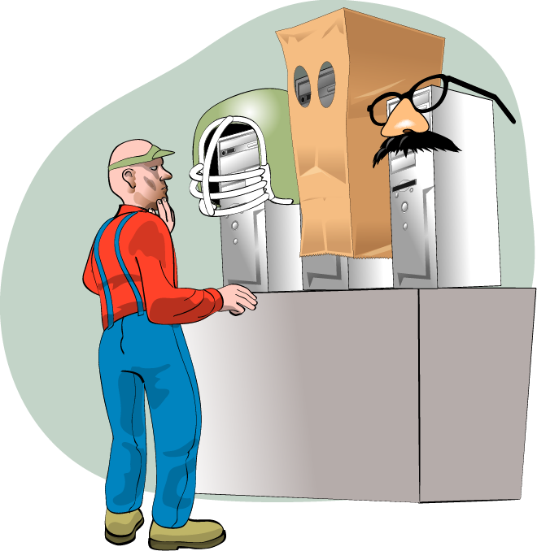
The first task in SKiP is to install what the vendor provides. Given the problems with what the vendor provides, the installation needs to take place in a safe environment, because a partially built system is likely vulnerable to attack. It needs to be built, hardened and secured, and its performance characterized in an environment where attacks and intrusions cannot happen.
The SA now knows that vendors provide imperfect systems that can be thought of as blocks of wood to be tailored to meet the needs of the SFU of which they are a part. How is a system installed, given that what is installed is likely vulnerable to attack?
SAs need to install the vendor-provided software in an environment where the vulnerabilities cannot be exploited by intruders and where the computer system can be tailored to meet the needs of the SFU. Among the possible environments are the following:
An air-gapped test network - This is a network where only a very few computer systems are installed. They probably contain software to be used in subsequent steps in the SKiP Method but they are not otherwise part of your production environment. The network is not connected to any other network, hence the name air-gapped. This reduces the likelihood of intrusions because physical security techniques are used to guard these computer systems as they are being built. Examples of physical security techniques are locked doors and guarded buildings.
Part of the challenge of an air-gapped network is making applications and patches available to other computer systems and network infrastructure components on that network. One way to solve this problem is to burn these applications and patches onto a CD and then physically transport that CD to the air-gapped network. Later in this class, you will learn about assumptions and how to challenge them. The issues here are that applications and patches transported by CDs from one network to another are assumed to be more secure than other methods. This means that an air-gapped test network is the best practice for building and tailoring computer systems that are intended to be part of SFUs, given that what the vendors provide are general-purpose systems with security gaps (holes).
A tightly controlled test network - This is a network that is connected to the Internet or some other network in a very tightly controlled manner, such as through a network router that grants very specific minimal access. It's easier to get applications and patches. It's easier to use but not quite as secure as the air-gapped version.
A production network - This is a network with full Internet or other network access. The computer systems will eventually reside on this type of network when they are in production. Access to applications, patches, intrusion detection systems, etc. is as easy as access is from a production system. This is the least secure but easiest to use for installation and tailoring.
Of these, the best environment is the air-gapped test network, where the opportunity for intrusion is smallest. This topic is discussed in more detail next.
11. Air-Gapped Test Environment
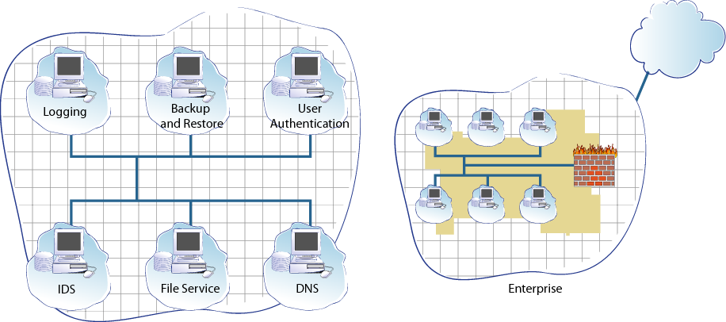
Emphasize that the air-gapped test environment (AGTE) resembles the enterprise network in many ways. It has a set of SFUs that support building new computer systems and their overarching SFUs.
This is a great time to introduce Virtual Technology to the students. Virtual Machines will be used in this curriculum for lab assignments. Virtual Machines can be used to create an AGTE where patches and system fine-tuning can be tested prior to implementing on production systems. Virtual technology is free and there are commercial products available.
n "Sustaining, Improving, and Building Survivable Functional Units (SFUs)", students will build new computer systems and network infrastructure components in an AGTE. Each student workstation has three networks where the traffic from each of those networks stays on that student workstation. It is not possible to get to any computer systems installed on those networks from anywhere else in the lab nor is it possible for any of those computer systems to communicate with another computer system installed on another student workstation.
An air-gapped test environment (AGTE) is a pseudo-enterprise network where the mission is to build SFUs that support the mission of the overarching enterprise. (Principle 6: Survivable Functional Units (SFUs) are a helpful way to think about an enterprise's networks) Since it is a network and it has a mission, it too consists of SFUs, specifically at least the following:
Logging - All that happens in the AGTE should be logged.
Intrusion detection - There should always be an IDS SFU even when it is unlikely that there would be intrusions.
Backup and restore - Files are created and can be destroyed. There should be a way to save work and recover when necessary.
File service - The file service provides all of the applications that have had their assumptions challenged and have been compared using the roadmap. There will also be patches from the operating system and application vendors.
Domain name service - There may be a DNS SFU that provides naming services for all of the SFUs in the AGTE.
User authentication - Those who do work in the AGTE need to be identified in some fashion and this SFU provides that service.
The presence of all of these SFUs would be ideal, that is it would make the job of building the new SFU components easier if these SFUs were presented in the AGTE. Frequently, the realistic differs from the ideal. This means that the AGTE may not have nearly all of these SFUs. Nonetheless, it is important to know the goals and architecture of the AGTE so that when there is an opportunity for you to build one, you'll know what it ought to look like.
There will also be a collection of well-known SFUs that should not be present in the AGTE. For example, there should be no remote access or wireless SFUs, that is anything that provides access beyond the bounds of the AGTE.
The AGTE is just like any other production style network, except it's built to support the mission building SFUs for the true enterprise.
12. Installing the System
Given that the installation takes place in an AGTE, the SA does not need to pay as much attention to what is installed as they might otherwise. This means that insecure installations and vulnerable applications can be installed because it is believed that an intruder cannot access this system which is presently vulnerable to attack. The next step, Harden and Secure, will remove unnecessary applications and add additional ones so that the resulting computer system meets the needs of its parent SFU.
13. Topics
Best Practive vs. Best Practical
Vendor Provides
Hardening/Securing
Characterizing
Files and Folders
Network Activity
Kernel
Processes
Detect
Respond
Improve
Repeat
14. Harding/Security/
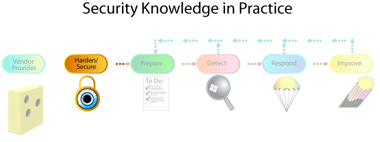
By this point, the system has been installed in the AGTE. The next task is to harden and secure it.
The first step in the SKiP Method is hardening and securing that system against known threats and vulnerabilities. This section describes a set of tasks that SAs perform as well as the philosophies behind those tasks. The philosophies are important because the current list of threats and vulnerabilities continues to grow, unfortunately almost daily. This means that SAs must supplement the information presented here to address the latest tasks when hardening a system.
The hardening and securing tasks described here must not be considered complete. Successful SAs will continuously research what hardening and securing means for the operating system and applications they support as more vulnerabilities and mitigation strategies are publicized. Keeping up to date is very important.
When installing an operating system or applications, there is likely an amount of hardening and securing of that OS or application that goes on simply by the nature of that installation process. It is difficult to split the two cleanly. The point is to realize that even the installation process contains some hardening and securing efforts. One example would be installing only the software deemed necessary was installed during the build phase as opposed to installing all software and then removing what is not needed.
|
Solves today's known problems
|
|
Assignment: the students should use the Internet to look for two documents that discuss hardening and securing Red Hat Linux, Windows, or which ever Operating System the students are using for this course. They should report on three of the tasks that they've encountered. Their report should describe the procedure that SAs follow to harden and secure using the tasks they've researched. The procedures they write should reference the numbered list for "An overview of the hardening and securing practices."
The purpose of this assignment is to get students acquainted with the practice of continuous research to learn the latest harden/secure tasks. The list of tasks in the harden/secure step grows and is refined over time and the SA needs to keep up with the latest set of tasks.
The following are the suggested readings:
Guidelines on Firewalls and Firewall Policy - (http://csrc.nist.gov/publications/nistpubs/800-41-Rev1/sp800-41-rev1.pdf)
Securing Network Servers - (http://csrc.nist.gov/publications/nistpubs/800-123/SP800-123.pdf)
Guidelines on Securing Public Web Servers - (http://csrc.nist.gov/publications/nistpubs/800-44-ver2/SP800-44v2.pdf)
Homework: Use the Internet to find two documents on securing Red Hat Linux, Windows, MacOS X or which ever Operating System you use. Report on three of the tasks by writing a procedure for each task that someone else could follow. Reference the hardening/securing list when writing the procedure.
The task of hardening and securing seeks to shape a computer system or network infrastructure component to meet an organization's security requirements for the SFU of which the system is a part. Given the vendors' propensity to provide fully featured and general-purpose systems, the SA must remove and constrain the excess software that is part of today's operating systems and applications. Much like the master crafter who transforms a block of wood into a smooth carving, an administrator must carve out of the general-purpose services and features provided by the vendor those that are unneeded, retaining only what is needed to address a specific business need. By removing unnecessary functionality, an administrator begins to harden and secure the system. But hardening and securing also means taking what is known today and applying it to best implement the applications in use today. In other words, simply sculpting the wood to limit functionality is not enough; the wood carver must also realize that wood is susceptible to the environment and needs to be stained and treated. Similarly, administrators need to configure functions and applications correctly to sustain a stable and secure configuration.
This step strengthens a system against known attacks by eliminating (where possible) vulnerabilities and other weaknesses that are commonly used in known attacks. The practices performed during this step will change over time to address new attacks and vulnerabilities.
An overview of the hardening and securing practices (each to be addressed in detail):
Install only the minimum essential operating system features. Disable and remove unneeded vendor software. The fewer software services on a system, the harder it is to access that system through whatever means are available. For example, remove the FTP server and client if the system is not expected to need or provide FTP service.
Install all known and applicable patches that correct known deficiencies and vulnerabilities. This is a task that changes over time with each new patch released by operating system and application vendor.
Install the most secure and current versions of system applications.
Replace applications that contain known vulnerabilities. For example, remove the telnet application and replace the Berkeley r-commands with SSH2, the Secure Shell.
Install and replace applications that support other SFUs. Examples are authentication, logging, backup and restore, and file service access.
Install applications to support the other steps in SKiP. Examples are applications that scan for viruses, characterize a system's behavior (OSSEC3), detect some types of intrusions through anomalies (also OSSEC) and signature recognition (SNORT4), perform secure administration (SSH), and forensic analysis (The Coroner's Toolkit also known as TCT5).
Remove all privileged and lenient (too weak or open) object access. This follows the principle of "deny first, then allow." Grant privileges and access only as needed.
Install and configure all operating system features and applications that support organizational policy and procedures. For example, configure the user password selection mechanism to check candidate passwords and well-known variations ('0' used in place of the letter 'o', '3' used in place of the letter 'e', etc.) against a dictionary that may also contain enterprise-specific words, phrases, and acronyms. The organizational policy may also define minimum password length and composition. For example, a password may be required to contain a minimum of 8 letters (Uppercase and lowercase), 2 numbers, and 1 special character (comma, period, exclamation mark, question mark, etc).
Install and configure all operating system features and applications that support risk management. For example, a critical information asset may be of such a value to the enterprise that it must always be encrypted when it resides on a disk or backup media.
Remember to do the hardening and securing tasks on a computer system that is attached to an air-gapped test environment (AGTE) as was previously described. This minimizes opportunities to compromise the system while it is being built.
There are many free guides available on the Internet. Even guides that are targeted for older versions of operating systems are still useful because they help the SA think about the issues to be considered when hardening and securing a computer system or network infrastructure component. It is important to state again that the SA needs to keep up-to-date with these and other resources, given that the hardening and securing tasks change over time.
Install necessary software only:
Computer system must have designed goal
All installed software supports goal
Some OSes packaged better for necessary software only
Most houses usually have more than one door, though only one is considered the "front" door. Because of this, homeowners have more than one entrance they need to secure. Certainly this security task would be easier if there were only one door. However, that presents other problems, such as having alternate exits in case of fire. More doors represents a tradeoff between a more secure configuration (only one door) and a more useable or practical configuration (multiple doors).
Computer systems have some of the same issues. For example, having all available software and packages on a system may make it easier to diagnose and repair problems and they may provide more options when configuring a system. But, the more software there is, the more opportunities there are for vulnerabilities that can be exploited by intruders to gain unwanted or undeserved access. So, the idea is to install only the minimum software necessary for a computer system to achieve is designed goal, and nothing more.
The goal of the computer system is already known, given its membership in an SFU and that SFU's role in helping to achieve the mission of the enterprise. The next issue is to answer the question "What is the minimum set of software necessary to achieve that goal?" Unfortunately, there's no easy answer.
One way to approach this is to run the system in a production mode, see the list of programs and applications used, and then eliminate all else. Another way is to load the absolute minimum and subsequently add what is missing. It is a bit of an art and can be laborious, but remember that the fewer the doors, the fewer things to secure and the more secure the system is.
Some operating systems make installing only the minimally required software much easier. Other systems are not packaged this way so installing only the minimal software needed to support the computer system's role in its parent SFU is harder.
Most Linux versions are distributed with hundreds of smaller packages that give the system administrator more fine grained control over the applications installed on a computer system. For example, the SSH server is a separate package that contains just the server, the necessary configuration files and enabling scripts, and documentation. The SSH client is packaged separately. So, if the requirements of the computer system specify the need for the telnet client but not the server, this is easily achieved with a Linux-based system.
Where possible, select an operating system that can be easily tailored to install only the needed software. No matter which operating system is ultimately selected, use the facilities available to install only what's needed to operate that system. At this point it may seem like an inconsequential decision, but as computer systems evolve, the ability to easily maintain them impacts the total cost of ownership of those systems.
This is item from the harden/secure practices.
Patch management is a significant problem in today's environment. Installing patches is important, it's true, but it's a huge problem to administer the patching method used by the enterprise. It is further complicated by the growing number of computer systems attached to the enterprise's network. That point needs to be stressed with the students.
Patches are going to be with us for a while and successful system administrators need to get them under control-whatever that means-sooner rather than later. Perhaps reviewing some of the patching methodologies and applications that can make the process smoother would be a good assignment for the students. Installing patches and configuration management go hand-in-hand.
If you learned that an ordinary screwdriver could easily defeat the lock on your front door, what would you do? You'd probably replace it with a different lock that could withstand that type of threat, especially if you felt that it was a true concern. Hopefully, you wouldn't wait until someone took advantage of this vulnerability in your house before you responded.
The same principle also applies to a computer system. In fact, 95 percent of all network intrusions could be avoided by keeping a computer system up to date by applying patches proactively (that is, before an intruder takes advantage of them).
There's no question that keeping patches up to date is often a hard and time-consuming task, especially if patching a system means visiting each computer system. Imagine walking around a site, visiting each and every workstation, installing needed patches after cajoling each user to log off. At 20 minutes per computer system, it would take more than 40 days to patch 1,000 computers. It's no wonder that organizations with this type of setup have systems that are often not patched. Even if patches aren't installed separately for each user, just keeping current with available patches and finding time to install them is a challenge.
What happens on those systems once they are patched? Do the applications that worked before still work? Can this be known in advance? If there is a problem, can the offending patch be successfully "backed out"? Unfortunately, this question is hard to answer because application vendors don't always provide enough information. Sometimes it seems easier to avoid patching systems altogether and just tighten perimeter defenses instead.
Since applications are the lifeblood of business, security is often sacrificed to keep the business running. This may mean that patches are not installed. Ultimately, the business will suffer, though perhaps not in the short term. In the long term, the potential harm that an organization will experience may be greater than the harm caused by installing patches earlier and discovering incompatibilities sooner.
Remember the old oil filter commercial tag line: "You can pay me now or pay me later"? (http://en.wikipedia.org/wiki/Fram_%28oil_filter%29) The commercial reminded people that the low cost of an oil filter-less than $10-could save them the cost of a new engine later-often over $1,000. Contrast the cost of installing a patch and perhaps discovering an application incompatibility with the cost of managing and recovering from an intrusion. At least when a new engine is installed in a vehicle, it will be drivable again and the driver will be able to get back to the business at hand. Recovering from an intrusion is not so straightforward. It is possible that an organization won't be able to recover from an intrusion quickly or completely. It may even put them out of business!
Nonetheless, patch wherever and whenever possible. When it's not obvious that a patch can be installed without serious repercussions, contact the vendor and ask. The more SAs who ask these questions of vendors, the more likely those vendors will make their products work on patched systems and, perhaps, publicize their efforts-the best of both worlds.
New vulnerabilities are discovered and exploited every day. For the systems, network components, and software used in your organization, it is important to stay abreast of reports regarding vulnerabilities and their solutions. Applicable security patches and workarounds should be applied and deployed as soon as possible and practical.
The list of patches to install also evolves over time. New vulnerabilities requiring new patches appear seemingly daily. Older versions of patches become obsolete. Superimposed on this set of patches are incompatibilities with applications that support the mission of the enterprise. All of these factors impact how patches are applied to the computer systems and network infrastructure components that make up SFUs that support the enterprise.
|
*********************************************************** *** INSTALL CURRENT VERSION OF APPLICATIONS *** *********************************************************** |
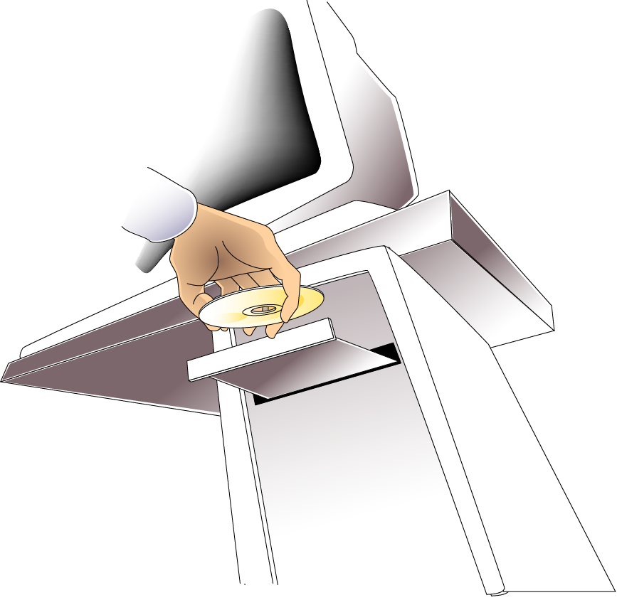 |
The current or latest versions of applications are often believed to have many of the bugs from previous versions repaired. Newer versions are also believed to be the beneficiaries of the "lessons learned" from earlier versions and other software development activities. Finally, it is also believed that newer versions of applications receive the most attention when bugs are found. Therefore, the harden/secure suggestion is to install the latest version of applications that support the mission of the SFU of which a computer system is a member.
Unfortunately, this is not always true. The challenge for the SA then is to select a recent version of an application that is a balance between doing what it is supposed to do, being less buggy than other versions (newer or older), and benefiting from other software development experiences.
How do you do this? When searching for applications, look for the following to help guide the selection process:
A description of the changes made in recent versions. Contained in this description should be references to bugs fixed. The references may be vague so that the specifics do not describe how to exploit the bugs, but there should be a reference nonetheless.
A clear description of the bug reporting and enhancement requesting services provided by the vendor. Can you report bugs easily? Does the vendor define its response to bug reports? Is the service free (the best) or is it commercial (acceptable)? Can the vendor quote the average time it takes to get a bug repaired and new versions made available to its customers?
If the changes made and bugs fixed in recent versions of the application are sufficiently specific such that you can understand their nature, do the same styles of problems keep appearing (buffer overflows, for example)? If they do, this can imply that their software development activities haven't been able to apply the lessons learned from past efforts.
What you're trying to do is to make an educated decision about an application based upon what you can learn from its documentation and advertised processes. You're going to base your enterprise's ability to survive on key applications so learning all you can about the vendor may give you some clues that help you to make choices.
Installing the latest versions of applications must take into account the policies and procedures in place in the enterprise (Principle 4: Information assurance policy governs actions). For example, imagine that the policy concerning application installation requires that all installed applications must be provided and verified by the operating systems vendor. It may not be possible to install a newer version that comes directly from the application provider since it has not yet been verified by the operating system provider.
In the Red Hat Linux environment, there is a discrepancy between the version of the Apache web server available from Apache's web site (http://httpd.apache.org/) and that provided by Red Hat (http://www.redhat.com). The one provided by Red Hat has been compiled and digitally signed as a Red Hat package whereas on Apache's web site, only the source code is available. Policy and procedures should dictate which version is allowed to be installed and if the disparity is too great, the SA should work to change the policy to better match the needs of the enterprise with the availability of applications.
This task ends when the latest versions of applications have been installed and made operational. However, these applications must also be consistent with enterprise policy and procedures and allow the SFUs to provide the services needed to support the mission of the enterprise.
|
***************************************************************** **** Replace Applications that contain known vulnerabilities **** ***************************************************************** |
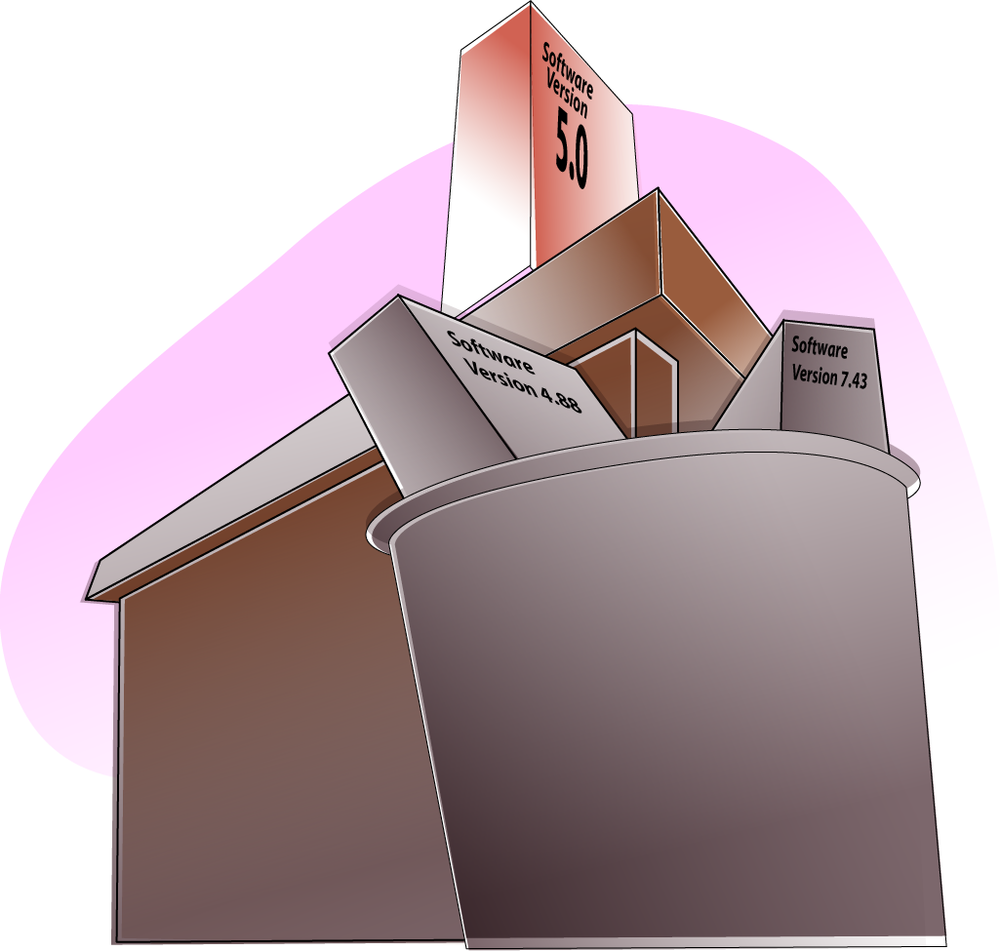 |
Some applications are vulnerable to attack by intruders or their use puts an enterprise's employees at risk in some way. For example, the standard telnet program exchanges information in the clear between two computer systems across a network. That information can contain a user's login, password, and perhaps other enterprise sensitive information that may be inadvertently disclosed. Using telnet puts its users and the enterprise at risk for having that login, password, and other information exchanged across a network overheard by an intruder.
Similarly, the Berkeley r-commands found on some Linux systems, these have been removed from most default Linux installations, though the packages are available in the vendors repository , namely rsh, rlogin, and rcp, use a weak authentication scheme that is easy to exploit, giving unwanted access to unauthorized parties. The standard r-commands also exchange information in the clear across the network. These are examples of Principle 2: Everything is data, and Principle 5: Identification of users, computer systems, and network infrastructure components is critical.
Both of these sets of programs can and, in most cases, should be replaced with functionally equivalent versions that reduce or eliminate vulnerabilities and risks to user information. The challenge for the system administrator is to decide which programs installed during the harden/secure phase need to be replaced by better and less risky versions.
This is another example of where SAs need to continue to research new freeware and commercial applications that may be viable alternatives to those provided by operating system and application vendors. Unfortunately, there is no "list" that identifies vulnerable or risky applications and their suggested replacements.
In older Linux environments, the Secure Shell (SSH) was not provided by some vendors. It was necessary to retrieve it from the authors (http://www.f-secure.com/ or http://www.openssh.com/) and install it in place of the Berkeley r-commands, rsh, rcp, and rlogin. While this is no longer a problem because SSH is widely distributed, the concept still holds. The SA still needs to continue to research new freeware and commercial applications that are alternative to vulnerable or risky applications provided by the vendors.
One place where applications are announced is on the Source Forge6 web site. It has a searching capability as well as browsing. It is very active and SAs ought to keep up-to-date with developments announced there.
Again it is important to install only those applications that are aligned with enterprise policy and procedures as presented in Principle 4: Information assurance policy governs actions.
Principle 8: The road map guides implementation choices (all technology is not equal) applies here. For example, when the SA recognizes that telnet is vulnerable to attack and places its users at risk, what are the choices and what are the criteria by which an alternative is selected? By building a roadmap of implementation choices, a suitable replacement for telnet can be identified and chosen.
This part of the SKiP Method requires regular attention. Just like the doctor, electrician, or plumber who keeps up with advances in their field by reading journals and other trade publications, SAs need to be on the lookout for new applications and products that can help do the job more easily and produce a better quality-in this case, more secure and survivable-product.
At the completion of this task, known vulnerable or otherwise risky applications have been replaced with comparable versions that reduce the risk to the enterprise in a manner that is consistent with enterprise policy and procedures.
|
******************************************************************************************************* *** INSTALL, REPLACE, AND CONFIGURE APPLICATIONS THAT SUPPORT OTHER SFUs IN THE ENTERPRISE *** ******************************************************************************************************* |
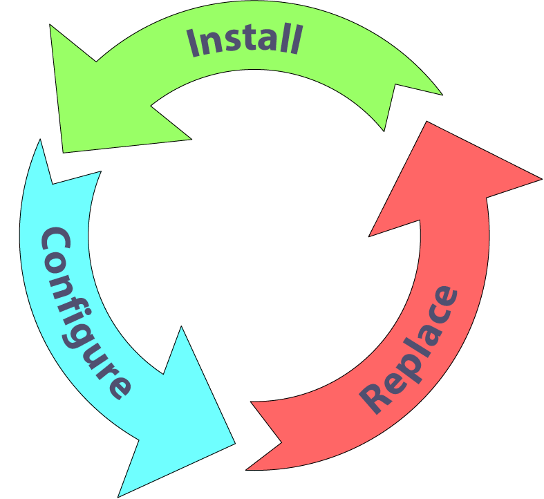 |
The enterprise's computer network is built from many SFUs working together to achieve the enterprise's mission. When applied to a computer system, part of the harden/secure step of the SKiP Method involved installing and replacing applications that support other SFUs in that enterprise network.
For example, if the enterprise's authentication SFU uses Kerberos7 as the network authentication protocol, then various applications as installed from the operating system and application vendors may need to be replaced by Kerberos-aware versions. Similarly, if the enterprise has a logging SFU, all other SFUs need to be configured to use the logging SFU as the repository for logging information.
Recall from the example given in Principle 6: Survivable Functional Units (SFUs) are a helpful way to think about an enterprise's networks computer systems and network infrastructure components in the Domain Name Service SFU need to interact with logging, backup and restore, authentication, and administration SFUs.
The requirements placed on these cooperating SFUs gives rise to installing applications and configuring computer systems and network infrastructure components to properly interact with those SFUs. Those activities are carried out by the SA during the Harden/Secure step of the SKiP Method.
At the completion of this task, all applications that support other SFUs in the enterprise have been either installed or replaced, and configured appropriately to work with those SFUs.
|
******************************************************************************************************* *** INSTALL, REPLACE, AND CONFIGURE APPLICATIONS USED IN OTHER PARTS OF THE SKiP METHOD *** ******************************************************************************************************* |
|
This goal of this part of the Harden/Secure process is to install applications that are not traditionally part of the standard offerings from the operating system vendor and may not be related to applications running on the computer system in support of the functions of the SFU. Below are classes of applications that need to be installed by a specific freeware or commercial applications. The key is to recognize the class and then find the appropriate applications for those requirements.
Remote access - If this computer system or network infrastructure component is to be administered remotely, such as over a network connection, then applications that support those activities need to be installed. Recall Principle 2: Everything is data and Principle 5: Identification of users, computer systems, and network infrastructure components is critical describing data and authentication.
Characterization and intrusion detection - The next step in the SKiP Method characterizes the operation of the system, a process called base lining. The applications used in that step are installed at this point. The same applications are also used to determine if the system's operation departs from what is expected in the Detect step in the SKiP Method.
Incident analysis and response - The applications installed here help the system administrator understand what happened to the system after a break-in and to respond to the incident. They are used in the Respond step in the SKiP Method.
At the completion of this task, all of the applications needed to interface this computer system or network infrastructure component to the other SFUs in the enterprise upon which it depends have been installed and configured.
**********************************************************
****** REMEMBER - EVERYTHING IS DATA ********
Data is everywhere
- Secure the data
Data lives on a host
- Secure the host
Host lives on a network
- Secure the host on a network
On a host, data is secured with
- Limiting Access
- Encrytpion
**********************************************************
Principle 2: Everything is data talked about the idea that everything is data, and the ways that you secure that data are through limiting access and failing that, encryption. When you get to that task, you need some techniques for limiting access and deciding what access is appropriate. The next few slides talk about that.
Groups simplify ACL management
Use descriptive names
Grant access to groups, not individuals
Works even when group is empty
Use even if group has one member
Self-documenting
The first layer of defense against the would-be intruder, or more generally those who shouldn't have access to data, is access control lists, also known as ACLs. ACLs control which users-actually the identities that they are logged in as-can access information in a file system. Before explaining ACLs, let's first discuss the nature of those identities that are granted or denied access to data.
From a pragmatic point of view, it is strongly recommended that access to information be granted based on groups, not individuals. For example, this means that instead of giving read-only access to the Master Auto Parts File to the identities Manny, Moe, and Jack, the administrator would first create a group descriptively named Sales_Clerks and place the identities Manny, Moe, and Jack into that group. The access control lists associated with the Master Auto Parts File would then be changed to grant read-only access to the group Sales_Clerks. If that ever changes, only the group definition needs to change; the file need never change, even if no one is a member of the Sales_Clerks group. Plus, the group's name helps to document the access granted to those who are members. It is strongly recommended that you use groups in ACLs even if they contain only one member.
What access is appropriate?
What access does an application need?
What access does an identity need?
Documentation is lacking
Therefore, must do run-time analysis
The biggest challenge in setting up access controls in an operating system's file system is usually not the use of interfaces to set those permissions. Instead the challenge is discovering what level access is appropriate. The question quickly becomes how does the administrator know which identities need what type of access to properly use the data items in question?
As will be discussed in more detail later in this lecture, a program runs with a set of credentials that identify the entity (logged in user) and a set of rights and privileges to which that user is entitled. The key is to minimize the access that a program, operating on behalf of the user, has to information resources on a computer system (e.g., the file system, functions within the kernel, access to the network, etc.). For now, the issue is the task of determining the set of information resources accessed by a program.
Unfortunately, vendor documentation usually does not provide enough guidance to help administrators answer these questions. The information resources that programs use (files and directories/folders) and the way they are used (read, write, and execute) must be determined through brute-force techniques. Fortunately, there are applications available to learn how programs interact with these resources.
The strace program lists the system calls made by a process. It shows the arguments to the system call and the system call's return value. From this information, it is possible to determine which files are used and how they are used. This is the information necessary to more accurately set the appropriate access controls. However, the strace output is very difficult and cumbersome to read for someone new to Linux and system calls. On a Windows system, Process Explorer, by Sysinternals can be used to provided detailed information about a process.
So then, to set ACLs on files to match the permissions needed by users, the following must be known:
The files an application uses
How reading, writing, or creating an application uses those files
Which users need such access
Then, grant access by putting those users into groups.
How do I set access for applications?
Operating system specific
Many resources on the Internet that explain what to do and how to do it
Most of the harden/secure references on the Internet explain what needs to change to set access for applications in response to what the vendor provides.
See Cyberciti "How Linux File Permissions Work" (http://www.cyberciti.biz/faq/how-linux-file-permissions-work/) and "UNIX Security Checklist, v3.0" (http://www.auscert.org.au/render.html?it=1935&cid=1920) for checklists that include more restrictive file permission settings for Linux-based systems.
At the completion of this task, access control lists for files and folders will have been tightened to restrict access beyond that initially provided by the vendor. Factored into the access provided should be policies and procedures (Principle 4: Information assurance policy governs actions) and risk management (Principle 3: Not all data is of equal value - risk must be managed).
Beyond ACL's - Encryption
If access cannot be restricted, use encryption
What is the lifetime of the information to be encrypted
Impacts "strength" of encryption
Files vs. File System
When an asset is vitally important to an organization's mission, it can be further secured through encryption. Encryption obscures information by mathematically changing that information. If that changed form falls into the wrong hands, it is of no use without access to the algorithms and the keys used to perform the encryption since the algorithms are normally available. The challenge then is to safeguard the keys used by the encryption algorithms. In fact, since encryption algorithms have become so computationally complex, intruders have turned their efforts to stealing the keys and away from brute-force cracking.
Remember that it is important to know the lifetime of the asset to be encrypted. Knowing this helps in the encryption algorithm selection process.
It is also important to know how much information needs to be encrypted, that is just individual files or entire folders or directories or an entire file system. This too impacts the selection of the applications used to encrypted important information assets.
Applying Principle 3: Not all data is of equal value - risk must be managed helps to identify the critical information that are candidates for the extra protection that encryption provides.
Linux-based and Windows-based operating systems have support for cryptographic file systems. See Truecrypt (http://www.truecrypt.org), Encfs (http://www.arg0.net/encfs), and Bitlocker for Windows (http://windows.microsoft.com/en-US/windows-vista/BitLocker-Drive-Encryption-Overview).
Among the first to support UNIX systems and subsequently Linux was the Cryptographic File System (http://www.crypto.com) originally written by Matt Blaze. CFS rules exclusively in user mode and does not require kernel patches. Unfortunately, this design also slows its performance. Nonetheless, it is worth the effort.
Encryption information is on a directory-by-directory basis and the encrypted versions of files reside on the computer system doing the decryption. Once of the benefits of CFS is that it can also operate on files residing on other servers where those files are stored using NFS, AFS, or other file sharing methods.
Encrypting file systems are available for Linux and Unix-based systems. Some are free and some are commercial.
At the completion of this task, appropriate encryption applications have been put in place so that the critical information assets identified through risk management can be further guarded against unwanted and unexpected access.
This is a continuation of item from the harden/secure practices. In this case access to critical information assets is restricted by disabling services and limiting access at the application level.
- A house has - More than one door - Many windows - Perhaps a garage - Perhaps a chimney
- Itemize - Disable or configure |
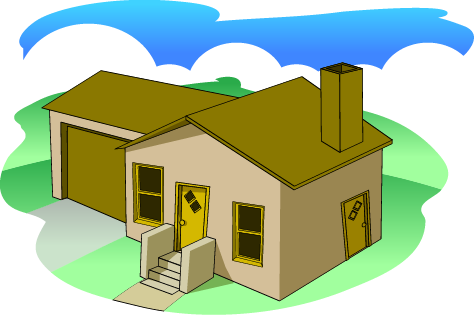 |
A house has windows, doors, a garage, and perhaps a chimney. Each represents a way for a burglar to gain access to the sensitive information we've locked in our file cabinet. We need to recognize that entranceways exist and then think about them in the same way that we think about the front door. That means that we must be sure that these other entrances are appropriately secured, security is reviewed regularly, and there are family policies and procedures that define who can use any of these alternative entrances.
A computer system attached to a network may also have more doors, windows and other points of access beside the front door of the standard terminal login and password. Each of these entrances-called services in networking parlance-needs to be identified and appropriately secured.
Under the best of circumstances, the applications that provide services that are unneeded should be removed wherever possible. However, this is not always possible. When a service cannot be removed by removing its corresponding application, that service should be turned off and disabled. In addition, access to all services should be restricted to only those constituencies served by the SFU of which the computer system or network infrastructure component is a member.
The challenge is determining the list of services on a computer system or network infrastructure component and the applications that provide them. Once this information has been determined, the applications are either removed or turned off and disabled. For applications that must remain on, their access is restricted to only the constituencies requiring service.
For a Linux system, the applications to use are: nmap8, lsof 9, xinetd10, chkconfig, and the TCP Wrappers.
|
Data on the network: host-based firewalls
OS Specific
|
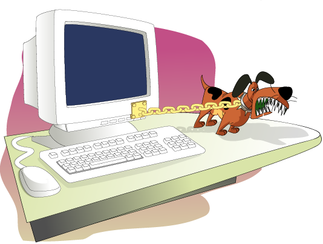 |
Our house may have a security system that extends beyond locks, latches, garage door openers, etc. In fact, the system provides another layer of security which to us means that if one of the locks, latches or other devices fails or can be bypassed; the security system is still there to alert its listeners about an intrusion. In some cases, where no lock, latch or other device could be installed, the security system is the only means of defense.
On a computer system, the host-based firewall is analogous to the home security system. It is another defense beyond the specific connection constraints installed at the host level as just discussed. Firewalls can also add constraints at the operating system level when none can be added at the application level. Finally, with host-based firewalls, the administrator can eliminate connections to services that have been disabled and subsequently removed as another way to insure that the service remains disabled, even if the supporting files are reinstalled and the service restarted.
For a Linux system, IPTables is the tool to use. There are many GUI-based front ends for IPTables. For example, Firewall Builder (http://www.fwbuilder.org/) is a free application that could be used to build the configuration. Also the Webmin (http://www.webmin.com/) remote administration system provides an interface to IPTables.
To simplify the increasingly complex task of securing information assets, think of all information as input that is consumed by an information processor (i.e., the operating system or a program) through a service (the file system, a Web server, e-mail server, etc). That information can be protected in two fundamental ways:
Restricting access - Only those who can operate on the information (i.e., read, write, append, execute, etc.) are allowed, and all other operations by all other users are excluded. On a computer system, this is achieved with the access control devices known as access lists. They come in a variety of types, from those traditionally associated with the file system, to special types of files and hardware controls. Access controls are also used at the network level, where network data is exposed to only those hosts and network segments as needed. All of these access control devices restrict access to the information assets they are guarding.
Concealing information - With this type of access control device, other users may be able to see the concealed form of the asset but only a few can translate it into a usable form. On a computer system, this is achieved through encryption, be they assets that reside on storage media, transiently on the network, or in the address space of a running application. The information must be strongly encrypted such that the time to decrypt it require more time elapsed time than the useful lifetime of that asset. This means that by the time that the asset is decrypted its unencrypted form is no longer useful.
When the host resides on a network, that host computer system must be evaluated with respect to the services it provides to that network. Every service must be accounted for, and either disabled and removed from the system, or configured to constrain the set of computer systems that can use that service. There are various programs that can be used to enumerate the set of services that a host provides, from both the host and the network perspective.
No matter the disposition of the service, the way in which it is started must be clearly identified. If the service is to be disabled, the instantiation method must be changed to disable the service. If it is to be constrained, the instantiation method may be changed depending on the service. In some cases, those changes will suffice, whereas in other cases, the application that provides the service may need to be configured directly. Finally, some services have no capability to constrain the set of hosts to which they provide a service.
Independent of whether services are disabled or constrained, use host-specific firewalls as a defense-in-depth measure to guard against services being re-enabled and to supplement other constraining mechanisms. Finally, when no other mechanisms are available, host-specific firewalls provide the only means to constrain the computer systems seeking service. This section provided a method for configuring such a firewall.
The house has many doors, windows, and other access points. So does a computer system-through its offered services-and attention must be given to restrict access to only that set of networked computer systems that are allowed to receive service.
|
Physical Security
- Boot hardware differently - Move assets to different computing system
|
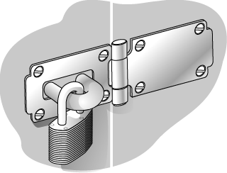 |
Within the domain of a computer system, physical security must also be a concern to the administrator. For example, if you've followed the advice given in this module about ACLs but an intruder can boot a different operating system on your computer-one that disregards the ACLs-then they are useless. ACLs are most relevant when they are interpreted by the operating system for which they are designed.
Consider the following: Imagine that you have a Linux-based system where you have configured the ACLs on various files in a file system. If you remove the disk drive that contains the file system that in turn contains the files whose ACLs you've configure and install that disk drive in another Linux-based system, those ACLs will probably have the same meaning.
Imagine further that the disk is installed in a non-Linux system. Your carefully crafted ACLs probably don't have the same meaning because they are no longer being interpreted by a Linux-based system or by a system that understands the type of file system installed on the disk drive. It is as though there are no ACLs at all.
The example above can be generalized to the following: If the fundamental computing paradigm can be changed, then controls used by the system administrator to secure information assets can be rendered meaningless. Earlier we discussed identification and authentication as a principle important to ACLs-if people are improperly identified as users, then the ACLs that discriminate asset access have no meaning. In this module, we consider the physical security of a computing system as a way that an intruder changes this fundamental computing paradigm.
If an intruder seeks to change this paradigm from a physical security perspective, the administrator needs to consider the following:
Interpreting storage information in a different context - This means disk contents are read and acted upon by an operating system that assigns a different meaning to those contents. This can happen in several ways:
- Booting a different operating system on the same hardware - This can happen when the BIOS [BIOSCentral] or EEPROM is improperly secured such that the hardware loads and executes a different operating system. Mitigation strategies include:
- Passwords - Assigning a BIOS or EEPROM password means that the system cannot be booted differently without that password. Note that some operating systems provide a way to set these passwords from software. Note also that physical access to the motherboard of the computer system may provide a way to clear the BIOS or EEPROM password, therefore rendering those systems vulnerable. You need to know how your system works and where to concentrate your efforts.
- Changing the boot device order - If you can change the boot order, then change it to reflect from where the operating system should boot. The boot order usually requires the BIOS or EEPROM password.
- Locking hardware to prevent tampering - Some motherboards contain circuitry that allows the CMOS RAM (which contains BIOS/EEPROM configuration information such as boot order and passwords) to be cleared. An intruder can gain access to that motherboard if the computer's cabinet can be opened. Again, check the specifics of your systems to see what is possible and therefore what mitigation strategies to apply.
- Removing unneeded devices so that they cannot participate in the boot process - This is a more drastic step that may make routine maintenance on your systems more difficult. One of the challenges of systems administration is balancing the security of a system against its usability. By removing the floppy disk and CDROM from a system, you have eliminated those boot options and have improved the security of the system.
- At the same time, you have also eliminated them as fallback boot methods that can be useful in the event of a corrupted hard disk, for example. Only the administrator can select the appropriate choice-to remove or not to remove-given the requirements of the system in its production setting.
- Locating computer systems in a secure facility - By placing a computer system in a secure facility, some physical security concerns can be addressed. Much as your house could be in a private community with gates and fencing designed to keep out traffic, your computer systems could be placed behind layers of locked doors.
- Removing the hard drive - If the hard drive can be removed from the computer system and installed elsewhere, the paradigm can again be changed. This happens most often with a portable computing system such as a laptop computer. The mitigation strategies of locking the hardware to prevent tampering and locating computing systems in a secure facility also apply here.
Denying service - This means that the computer system where the information assets are stored is rendered useless through damage or theft. If an intruder's intent is to deprive users of the benefits of accessing an information asset, then destroying it or stealing it achieves that goal. Even if the computer system is locked against tampering with the hardware, it may be possible to steal it or destroy it. Care should be taken so that that cannot happen either.
In summary, concerns about physical access revolve around changing the paradigm by which information stored on the hard disk is changed by processing that information through a different operating system. The hardware is either made to run another operating system or the hard disk is moved to another computer system where it is processed differently. There are various mitigation strategies available to the administrator. Finally, the computer system itself can be stolen or destroyed, rendering the information unavailable for its intended audience.
Conformation to enterprise policies and procedures
Examples:
Acceptable Passwords
Application qualification
Acceptable hardware configuration changes
Remote access
File backups
Enterprise policies and procedures guide the next set of tasks. They may prescribe various requirements that need to be accurately reflected in the configuration of computer systems and network infrastructure components.
For example, the enterprise's password requirements could be clearly described in a policy. The SA uses this information as the guide to installing and configuring password the checking technology to enforce the policy. Here are other examples:
Application qualification - This policy could describe how applications are qualified for use in the enterprise. The SA may use this information to insure that applications that have not yet been qualified cannot be installed in the enterprise.
Changing computer system hardware configurations - This policy could describe what if any changes can be made by ordinary users to their computer systems. Examples could be adding or removing external storage devices, modems, and additional network interface cards.
Remote access - This policy could describe how access to enterprise resource is gained when the point of origin is outside of the enterprise's property.
File backups - This policy could describe the file backup strategy in the enterprise.
At the completion of this task, the SA has configured the computer system or network infrastructure component to conform to all applicable policies and procedures. This may include adding additional applications and likely includes configuring installed applications for policy conformance.
Conformance to enterprise risk management
Examples
Further restricting access to information assets
Adjusting applications based on risk to the enterprise
May require different or additional applications
Probably requires configuring installed applications
Incorporating risk management issues is the final task of the hardening/securing phase. This set of activities uses the products of the risk management activities to guide the installation and configuration of existing and additional applications. Here are some examples of the kinds of activities carried out:
Further restricting access to information assets - The results of the risk management activities may indicate that certain information assets need additional access restrictions that more specifically define the characteristics of the access control devices that enforce that access. This can include but is not limited to adjusting ACLs, encrypting files, folders, or the entire file system, and encrypting network traffic. Access to the computer systems or the networks where critical information assets reside may also be further restricted.
Adding or changing applications that address specific risk-based issues - The risk management activities may indicate that one application is less risky to the organization than another so it's use in the enterprise should be preferred.
At the completion of this task, the SA has configured the computer system or network infrastructure component to incorporate the results of the risk management activities. This may include adding additional applications and likely includes configuring installed applications for conformance.
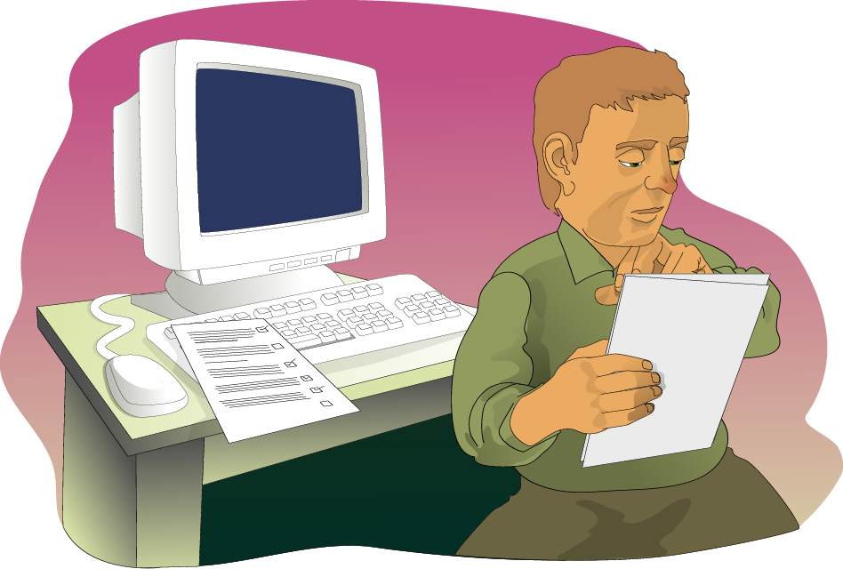
The goal of the hardening/securing step of the SKiP Method is to mitigate a constantly growing list of security issues so that the computer systems, so strengthened, can fulfill their role in the encompassing SFU of which they are a member. This is achieved through the following means:
Installing only the minimum of applications needed to support their role.
Applying all available and appropriate patches to the operating system and applications.
Installing where appropriate and possible the current versions of all applications.
Replacing applications known to be vulnerable or known to place user information at risk.
Installing, replacing, and configuring applications to support interoperability between SFUs.
Installing, replacing, and configuring applications to support subsequent steps in the SKiP Method.
Regulating access to data through all available access control devices (ACLs and encryption at the file system level, services and firewalls at the network level, and physical security of computer systems).
Install and configure all operating system features and applications that support organizational policy and procedures.
Install and configure all operating system features and applications that support risk management.
15. Configuration Management
The point of this section is to note for the students that Configuration Management is a valuable approach to managing an ever growing number of computer systems in the enterprise's networks. They need to do all of the steps in the SKiP Method and then use Configuration Management to scale those efforts to the enterprise.
The set of tasks that the SAs must perform for each and every computer system and network infrastructure component deployed around the enterprise is a daunting task, even when their number is modest. Some automation of those tasks could yield a substantial improvement in the SAs' ability to manage those computer systems and network infrastructure components.
The topic here is configuration management and the idea is to automate the tasks in the Harden/Secure step of the SKiP Method where possible so that they scale somewhat independent of the number of computer systems and network infrastructure components in the enterprise.
There are many commercial and free products that can help the SA manage configurations across the enterprise. One free application is "Puppet - http://projects.puppetlabs.com/projects/puppet"
The goal is to be able to manage a group of computer systems and network infrastructure components throughout their lifecycle in such a way that patches, configuration changes, new applications, etc., can be quickly and easily applied to the enterprise network.
16. Topics
Best Practive vs. Best Practical
Vendor Provides
Hardening/Securing
Characterizing
Files and Folders
Network Activity
Kernel
Processes
Detect
Respond
Improve
Repeat
17. Prepare
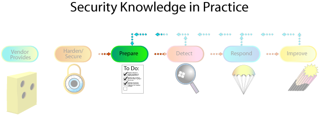
The second step in the SKiP Method is named Prepare. One of the essential concepts behind Prepare is that there are vulnerabilities that have not yet been discovered, discovered but not yet fixed, or discovered, fixed, but not yet patched. No matter what the reason, these vulnerabilities were or could not be addressed by the Harden/Secure step. The system administrator, therefore, needs a way to recognize when these vulnerabilities have been or are being exploited.
To support such recognition, the Prepare step uses a technique called anomaly-based intrusion detection. Key to that is learning how the computer system operates when it's operating normally. If the SA knows what normal operation is, it's much easier to spot abnormal or anomalous operation. Such anomalous behavior is most likely the result of an intruder's attacks or break-ins.
Learning how the computer system operates normally is called characterization. This topic describes what and how to characterize a computer system. The same techniques apply to other network devices as well, such as network infrastructure components and SFUs.
Some of the system attributes characterized in the Prepare step make use of robust and mature applications but unfortunately not all of them. This means that to fully support all of the characterization tasks, the SA will need to continue to monitor information sources for new applications or in the mean time, build ad hoc schemes. This section gives some suggestions on applications to use to get started.
Notice from the SKiP Method icon that Prepare is entered from two different places:
From Harden/Secure: In this case, the computer system has not yet been installed in the production environment. It is still in the air-gapped test environment. It does have all of the applications needed to operate it in a production environment. This happens only once.
From Improve: In this case, the computer system has been installed in the production environment. It has been changed in some way by the Respond or Improve steps to be discussed later and it needs to be characterized again because of these changes.
No matter how the computer system entered this step, the next task is to characterize its behavior. To summarize, the idea is simple: if you know how the computer system works normally, it is easier to recognize when is operating abnormally. If you spot abnormal behavior, you then need to look for other signs of attack and intrusion.
In our block of wood analogy, our master crafter prepares his Web server by inspecting it so that he can learn all about it. By X-raying his Web server, he can see the knots in the wood, the depth of the hardware he's selected to attach his Web server to its holder outside of his shop, and all other defects originally in the wood and those introduced by his chiseling. He knows all about his Web server and is now able to recognize any changes that occur over time.
On a computer system, characterization entails examining a system's operation and performance under normal conditions and recording expected behavior as the system's known, baseline state. This baseline state also contains information (also called attributes) about expected changes at the network, system (including kernel), process, user, file, folder/directory, and hardware levels. Once a trusted baseline state is captured, SAs subsequently compare attributes of an executing system to the baseline to learn if something has change. The SA can then make an informed judgment as to whether or not the change is acceptable and expected.
One way to think about the distinction between Harden/Secure and the characterization part in Prepare is that hardening attempts to solve known problems by applying known solutions, whereas characterization helps to identify new problems. In using a characterization baseline for comparison, problems can be identified through anomaly-based detection techniques, that is, departures from normal behavior, so that new solutions can be researched and applied.
For each of the attributes of the system being characterized, namely files and folders/directories, the network, the kernel, processes, and hardware, the characterization task produces data that will ultimately be used in the Detect step in the SKiP Method to determine if the computer system is working normally. The integrity of that characterization data is vital to the process of determining anomalous behavior. How should that characterization data be managed and where should it be stored?
How that data is managed and where it's stored depends on the applications selected to do the characterization and anomalous behavior detection tasks. This is an important issue. If an intruder is able to change characterization data, they can change the definition of normal operation to include their activities. They could then easily defeat anomaly-based intrusion detection if they can change that data. So, it is vital to spend the resources needed to improve the integrity of characterization data.
For example, the AIDE application uses digital signatures to guarantee the integrity of the characterization data and the configuration files used to produce that data. This technique gives some freedom as to where that data is stored. Unfortunately, other characterization applications do not have this digital signature capability built in. You'll have to devise your own scheme for guarding the integrity of the characterization data. Other applications such as OSSEC and Samhain use a client/server architecture. The server stores the signatures and initiates the scans at a given time. This will require strong ACL's and host based hardening of the server storing the signatures.
These days one of the easiest ways to improve the integrity of the characterization data and the configurations that produce it is to create CDROMs that contain it. Use cryptographic checksums and digital signatures like those provided with PGP11 and GPG 12 to help ensure characterization baseline integrity. Both of these techniques help to reduce the likelihood that the characterization data and configuration can be altered by anyone, including an intruder.
Now let's begin to look at the attributes of the system that are being characterized, starting with files and folders/directories.
The following are the suggested readings:
http://www.ossec.net/main/manual/manual-syscheck This site explains how to configure file integrity checking for OSSEC.
Part of the characterization practices seek to identify the types of changes that are made in the file system, that is, what files are routinely changed, added, deleted, and what folders/directories are routinely changed, added, and deleted. The reason to characterize the state of files and folders/directories is that after a break-in you will want to answer the question, What changed? If you know what changed, its easier to repair the system and put it back in to production. And if you can minimize the time that a computer system is unavailable, that system can more easily support the mission of the enterprise.
How do you determine what the files and folders/directories looked like before the break-in, and where were these files located? Chances are you're not really sure. Not only that, it's hard to tell unless you've taken steps to record the kind of information that can help you decide what changed.
To help you keep track of the files and folders/directories on your computer and their content, you need to acquire a free or commercial version of a program called an integrity monitor. An integrity monitor checks files and folders/directories to see what's changed since they were last inspected. These programs use advanced mathematics, such as SHA256 and RIPEMD 160 checksums, to detect even the smallest of changes. You run an integrity monitor during the Prepare step of SKiP and then periodically during the Detect step to see what changed since the last time you checked.
While this sounds easy, unfortunately it's not and therein lays the problem. The challenge is to know what changes to files and folders/directories can be expected as part of the normal operation of a computer system. Unexpected changes are likely to be the result of something else, an intruder's activities for example.
How do you know what changes to expect? The vendors could tell you but they don't, so you'll have to figure that out for yourself. One way to do this is to run the integrity monitor once during the initial Prepare step to determine what files and folders are there and what they contain. After you've created a baseline for your computer, use it for a while and then run the integrity monitor again. The changes you see should be expected. Over time, you'll learn what's okay and what's not. This is a time-consuming and tedious process. But if you want to know what's changed, that's what it takes.
OSSEC is one example of an integrity monitor. It is a open source product. The system administrator can define a database of file attributes and the acceptable changes to them. Once configured, OSSEC's output shows all of the anomalous file and folder/directory behavior via email.
There are also other integrity monitors available. Some are free while others are commercial products. All are fundamentally related in what they do and how they operate.
There are file integrity monitors that exist besides OSSEC, such as Tripwire (commercial), AIDE (open source), AFICK (Open Source), but OSSEC has a number of features that the other applications don't have.
The operating system's foundation as loaded into the system's memory - the kernel - may change, usually through the addition of device drivers. Knowing the specifics of any changes and whether or not they are acceptable is the key. For example, if a different type of Ethernet controller driver is loaded into your kernel, is that considered routine?
While there are no products, commercial or otherwise, that give you a complete solution (i.e., an "OSSEC for the Kernel") there are some strategies that can be used to reduce the likelihood that the kernel will unexpectedly change.
On Linux systems, adding drivers and other modules to the kernel can be prohibited as can changes to the special files that reference kernel memory. This means that the kernel can be made unchangeable beyond a specified point in the system boot process.
Note that in this case, the kernel's integrity is not checked, but controls are used to limit what can be done. This gives the administrator more confidence that the system is running as expected and that an intruder has not altered it.
This is an area where ad hoc techniques need to be used. On a Linux system, the lsmod (list modules) program lists the modules presently loaded in the kernel. It gives their name, size, and a count of the number of uses. This type of information can be used to determine how the kernel may change over time. OSSEC can be configured to alert on changes to hardware or modules on a Linux system.
OSSEC has some time-based monitoring capabilities.
When a system operates, users run programs at specific times or under certain circumstances. To fully characterize that behavior, it is necessary to know who runs what programs, when they routinely run, and some notion of the resources that they consume. For example, if a program claiming to be the disk backup program runs at 10:00 a.m. on a weekday and consumes 28Mb of virtual memory, is this normal behavior?
This functionality can be thought of as "OSSEC for Processes," and some products are emerging that begin to provide this information. Examples include Emerald13 from SRI and Panoptis14. These applications can help the system administrator understand more about processes behavior.
This is another case where ad hoc techniques are needed to determine what's normal and therefore what's not. Most systems provide some type of process accounting. This creates the raw data that can be analyzed to look for anomalous activity. Unfortunately, the burden of doing that analysis falls on SAs.
When a system operates, it consumes and produces network traffic. To fully characterize that behavior, it is necessary to know the volume of traffic consumed and produced versus the time of day versus. the network identity of the consumer/producer. For example, is a large volume of Web traffic produced for a network address in a foreign country at 2:00 a.m. normal behavior?
Ad hoc techniques are needed to analyze this collected data and give a characterization of the network.
Applications such as Argus15 describe the connections made versus. time of day versus. network identity. Other useful applications are NetScout16 and TrafficShaper17.
When a computer system operates, the hardware should remain unchanged, that is, adding new hardware such as a modem or another network interface card is likely unexpected. For example, is the addition of a second Ethernet controller on a desktop workstation normal behavior?
There are many hardware inventory programs, but they are not packaged in such a way that they report the set of changes from a known configuration. Such functionality can be thought of as "Tripwire for the hardware." The system administrator will again have to rely on site-specific applications and procedures to identify changes in a system's hardware inventory and whether or not they are expected.
On a Linux system, commercial applications like sysinfo18 can provide a textual description of the hardware configuration of a computer system. In addition, the kudzu tool that is standard with more recent versions of Linux also creates a text file that describes the hardware configuration which is stored in /etc/sysconfig/hwconf (on RedHat). OSSEC can be used to check for changes in this file which indicate a change in the hardware configuration.
As before, there are many applications that make the raw data files needed to characterize a system but there are few, if any, applications that can report changes over time. You will have to do that analysis yourself.
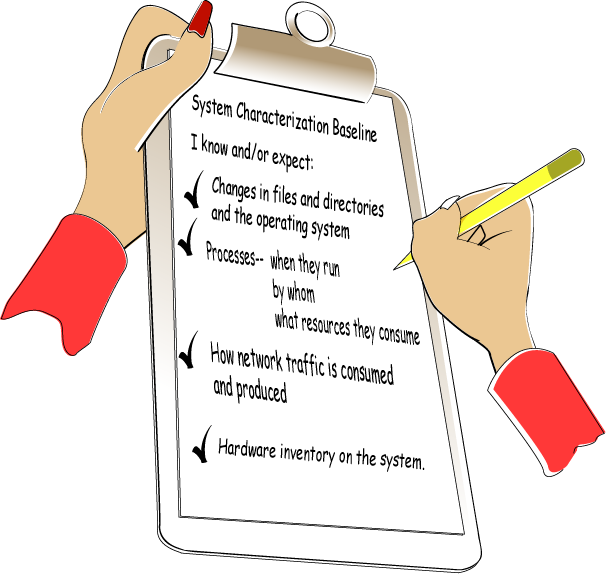
After completing this task, the system administrator has generated a system characterization baseline and knows the following:
The expected changes in files and directories and the operating system
The expected list of processes and when they run, by whom, and what resources they consume
The expected network traffic consumed and produced
The expected hardware inventory on the system
The specifics of these characterizations and the configurations that produced them are recorded somewhere (a CDROM for example) where their integrity can be verified. The system administrator uses this information in the Detect step, which is next in the SKiP Method.
Additional practices in the Prepare step include:
Instigating the development of policies and procedures to
- Identify critical assets, threats to those assets, and possible response actions
- Determine the priority and sequence of detection and response actions
- Specify the authority to act when an intrusion is detected
- Form and operate a computer security incident response team or equivalent capability
- Define what data to collect, where and when to collect it, and the means for its review and protection
- Assign necessary roles and responsibility
- Ensure users are adequately trained
- Ensure your organization is legally compliant with all laws and regulations
Managing data collection mechanisms (such as logging and monitoring applications) and the outputs they produce. Enable as much system logging as possible to provide an audit trail of all system activities. This information aids an administrator in understanding what happened when an incident occurs.
Understanding, selecting, configuring, installing, and maintaining applications for intrusion detection and response. Such mechanisms must be in place well before they need to be used.
At the completion of this step the first time through the SKiP Method, the computer system can be put into production as a member of an SFU.
The following are the suggested readings:
"Bypassing Integrity Checking Systems" (http://www.phrack.org/issues.html?issue=51&id=9)
"Fortifying the dali attack on digital signatures." (DOI: 10.1145/1626195.1626262)
All of the characterization data was created by applications which are file stored somewhere. A wily intruder could change these applications so that they misrepresent the actual state of a computer system. One such example is reported in "Bypassing Integrity Checking Systems" (http://www.phrack.org/issues.html?issue=51&id=9). Another attack has also been demonstrated in which a file can be modified and not alter the digital signature (Buccafurri, Caminiti, & Lax, 2009).
How do you know that the baseline characterization data created in the Prepare step and the characterization data recreated in the Detect step reflect the true state of the system and have not been altered in some way? Who checks the checkers?
All applications installed on a computer system are fair game for an intruder, so relying on them to accurately characterize that computer system presents a risk. To lessen that risk, consider installing those characterization applications on a CDROM that contains the characterization data and related configuration files.
Be advised that most modern operating systems use some type of execution-time linking facility. Therefore the CDROM that contains the characterization applications should be self-referential in that those applications only use other files that are installed on the CDROM. They don't use any files from the computer system's potentially compromised disks.
With this approach, you're only relying on the integrity of the operating system for the characterization effort. Given what was reported in "Bypassing Integrity Checking Systems" (Halflife), it is possible that that operating system could be changed giving misleading results. That's an assumption you'll need to make and a risk you'll have to take.
18. Topics
Best Practive vs. Best Practical
Vendor Provides
Hardening/Securing
Characterizing
Files and Folders
Network Activity
Kernel
Processes
Detect
Respond
Improve
Repeat
19. Detect
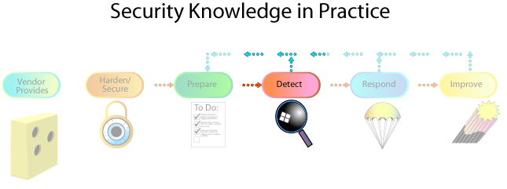
The Detect step is next. This is the step where a computer system or network infrastructure component spends most of its life. The transition occurs from the Prepare step once the system or component is initially ready for production or it has already been in production and changes were made in the Respond step that necessitated its repeated characterization.
Detect always occurs when the system or component is running in a production setting. SAs continuously look for signs of an intrusion, reviews operating system and applications vendor information, and reviews applications to add to the arsenal.
|
Unexpected changes
External stimulus
|
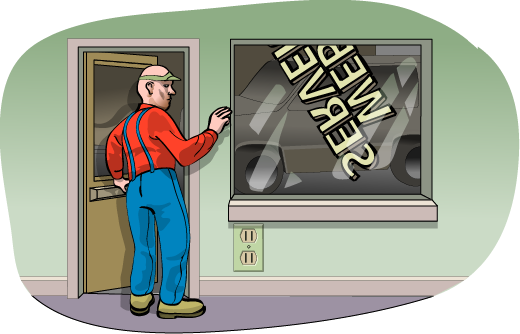 |
The following are the suggested readings:
"Securing Information Assets: Security Knowledge in Practice", [Rogers 02].
NIST Special Publication 800-12: An Introduction to Computer Security - The NIST Handbook. (http://csrc.nist.gov/publications/nistpubs/800-12/800-12-html/index.html)
SAs need to regularly monitor the hardened and prepared "chunk of wood" to detect changes. While some of these changes are predictable and constitute normal behavior, what SAs really want is to concentrate on detecting signs of anomalous, unexpected behavior and more specifically those anomalies that indicate possible intrusions and system compromise.
SAs also listen for things that could be detrimental to the system. Examples are patches released by the operating system or application vendors or intruder activity targeting similar computer systems. When SAs hear about one of these, they can take an action before it can be exploited.
The Detect step in the SKiP Method occurs with the system running in a production mode. The system administrator
Notices some unusual, unexpected, or suspicious behavior
Learns something new about the system's characteristics
Receives information from an external stimulus (a user report, a call from another organization, a security advisory or bulletin)
Change in policies or procedures
Change in risk status of the information assets
These indicate either that something needs to be analyzed further or that something on the system has changed or needs to change (a new patch needs to be applied; a new tool version needs to be installed; etc.). Analysis includes investigating unexpected, suspicious behavior that may be the result of an intrusion and drawing some initial conclusions, which are further refined during the next step, Respond.
The SA uses many of the same applications and procedures that generated the system characterization baseline to detect signs of intrusion on an operational system. The difference is that these results are compared against the trusted baseline. An administrator's task is to reconcile the differences between that baseline and what has now been found.
There are two possibilities when differences occur:
The SA did not or was not able to accurately characterize the system and the discrepancies represent a previously unknown but ultimately acceptable behavior. They need only update characterization data, creating a new copy (perhaps a CDROM), and updating checksums and digital signatures where appropriate.
The difference is truly anomalous and indicates that something has been tampered with on the system. They move to Respond and proceeds with those practices.
In addition, some external stimulus can also cause a transition from Detect to Respond. This includes the release of a relevant patch or a new tool. This transition is normally under administrator control and can be scheduled based on priority and available time.
|
SAs look at the characterization information from the Prepare step and compare it with what's going on right now. |
|
Basically, the applications and techniques used to characterize a computer system in the Prepare step are used in the Detect step to compare the current state of the system with the expected state. Any disagreement has to be reconciled and usually results in a transition to the Respond step.
20. Topics
Best Practive vs. Best Practical
Vendor Provides
Hardening/Securing
Characterizing
Files and Folders
Network Activity
Kernel
Processes
Detect
Respond
Improve
Repeat
21. Respond
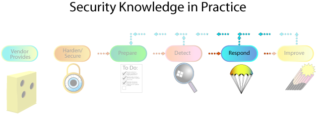
The Detect step detected something that requires a response. It may be as simple as applying a patch or as complicated as recovering from the effects of an intruder's activities (which may involve criminal investigation and prosecution in addition to the more technical tasks traditionally handled by SAs).
The following are the suggested readings:
Computer Security Incident Handling Guide (http://csrc.nist.gov/publications/nistpubs/800-61-rev1/SP800-61rev1.pdf)
Topics for Discussion:
Consider an "active" intrusion that has been detected at the Detect step.
Describe the decision that need to be made and the tradeoffs.
Talk about the policies that govern actions.
Talk about information gathering to support legal proceedings.
Once a problem is discovered, our master crafter needs to respond to the problem. In this case, the crafter selected hardware that wasn't up to the task; it wasn't strong enough to hold the Web server, so it crashed to the ground. The crafter needs to repair the wood and then select hardware better suited to the weight of the Web server.
On a computer systems, and again once a problem is discovered, SAs perform several practices to Respond to and contain the problem. The response can be as simple as taking minimal to no action by accepting the risk or taking significant steps to contain and recover from the problem. Successful response means that the system is recovered to a configuration and operational capability that existed before the compromise.
If the transition to Respond results from anomalous behavior caused by an intrusion, an administrator does the following:
Further analyzes the effects of, the scope of, and damage caused by the intrusion - The SA needs to understand what happened, the effects on the business, and any collateral effects to appropriately respond to the intrusion. Dealing with the effects of an intrusion may result in the insertion of new technology, practices, procedures, and personnel. Overreacting by unjustifiably introducing security measures may hamper the organization's ability to conduct business, ultimately leading to a loss or the end of that business.
Contains these effects as far as possible - One of the many challenges SAs faces in responding to an intrusion is deciding when they have learned enough about that intrusion so that they can take the appropriate recovery steps versus continuing to monitor an intruder's actions so as to discover all access paths and entry points. It is a delicate balancing act. If an SA does not discover and eliminate all intruder access paths, then it is likely that the intruder will return. However, if the intruder is allowed to roam through systems, then the damage caused to an organization's assets may be fatal. Identifying and containing the full effects of an intrusion can be a very difficult task and can take an extended period of time.
Works to eliminate future intruder access - Part of the analysis activity involves discovering how the intruder gained access. Frequently, there is a strong push to return a system to operation even if it means recovering to a previous but vulnerable and insecure state. In this event, the compromised system state is lost, as are the indicators of how the intrusion happened. The key is to consciously decide that this is the desired course of action and to recognize the ramifications of that decision.
Returns the system to a known, operational state while continuing to monitor and analyze - One of the goals of responding to an intrusion is to return the system to a usable state. That state should be an improvement over the previous state that resulted in the intrusion. Once the system is returned to operation, it is a heightened target for intruders, who may be planning to gain access through back doors they have installed. An administrator may learn more about the intruder's attack methods (and therefore the required defenses) through more detailed monitoring and analysis.
While these activities are going on, an SA notifies all other parties that may be affected, conveying concise, accurate, and appropriately directed reports of the intruder's activities and the response actions taken. This notification must be in concert with the organization's information dissemination policy and it should be in a language and style appropriate to those parties. Principle 10: Communication skill is critical to reach all constituencies applies here.
An administrator must collect and protect information that may become evidence in possible legal proceedings against the intruder, regardless of the organization's policy on prosecuting intruders. An organization must assume that other sites affected by the intrusion will request this information for use in their prosecutions, perhaps by subpoena.
The collection and analysis of intrusion-related information is called computer forensics. It is a growing information security discipline characterized by new applications, practices, and procedures. An administrator should track developments in this area including the availability of new analysis approaches and applications.
If the transition to Respond is the result of some other external stimulus, that stimulus is addressed and then the process transitions to Improve. For example, if the stimulus is the release of a patch from a vendor, the administrator applies the patch that constitutes completion of Respond.
Respond activities take place when the system is operating in a production mode. Systems may be unavailable for a period of time while repairs are made.
An administrator needs a test environment to more fully understand the nature of the intrusion. In this environment, an administrator may be able to run a quarantined version of any captured attack tools to learn which vulnerabilities the intruder has used to gain access, thus ensuring that these means of access have been removed before the systems are returned to operation.
The following are the suggested readings:
"Forensic Discovery" http://www.porcupine.org/forensics/forensic-discovery/
RFC 3227 Guidelines for Evidence Collection and Archiving [RFC3227]
With computer systems playing a more prominent role in crimes, there was a need for experts to analyze computer systems used in crimes. A break-in to a computer system that you manage may be used in a crime and therefore, may need to be analyzed to gather the information needed for prosecution. This task is called computer forensics.
Computer forensics
deals with the preservation, identification, extraction and documentation of computer evidence
has also been described as the autopsy of a computer hard disk drive because specialized applications and techniques are required to analyze the various levels at which computer data is stored after the fact
attempts to recover information the naked eye cannot see
An example of computer forensics is:
Recovery a deleted file off of a hard drive
An extreme example of computer forensics is:
Recovery of over 1,000 e-mails off a hard drive even
A year and a half after the individual left the company
After the hard drive had been formatted
After the machine was in use by another user for that hear and a half
There are a growing number of experts in this field who can perform a computer forensics analysis for a fee, and many educational institutions are beginning to train computer forensics analysts.
22. Topics
Best Practive vs. Best Practical
Vendor Provides
Hardening/Securing
Characterizing
Files and Folders
Network Activity
Kernel
Processes
Detect
Respond
Improve
Repeat
23. Improve
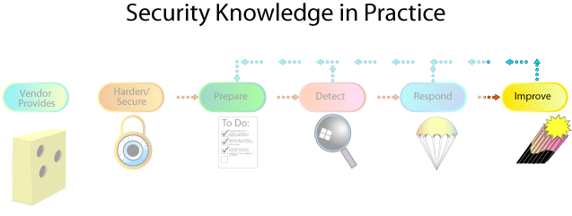
The Response activities have
ended and we progress to the Improve step in the SKiP Method. The key to this step is to evaluate how the whole process went with an eye toward improving it when the next security event happens. It is important to make time to do this evaluation while the memory of the events that brought the computer system to this point is still fresh in your mind.Our master crafter has responded to the bolts breaking on the Web server by fixing the wood and selecting and installing higher weight-rated bolts and installing a sensor that tells him about the state of the sign. He then returned the Web server to production-hanging it on the post outside of his shop after X-raying it again. The Improve step consists of changing the practices and procedures that surround his Web Server. For example, he could look more often at the server to see if it was still attached, or he could hire somebody to do this for him.
Back in the realm of computer systems, improvement actions typically occur following Detect or Respond. Improvement actions may include the following:
Personnel issues - Hold a post-mortem review meeting to discuss lessons learned. During Prepare, many decisions and role assignments are made. This is the time when those decisions and assignments should be reviewed and updated where appropriate with respect to the following questions:
- Did those who had a responsibility somewhere in the process know it?
- Were those who had a responsibility somewhere in the process educated and trained so that they could discharge it?
- Did those who did not have a responsibility somewhere in the process know that they had no responsibility?
Policy - Update policies and procedures. An organization typically has many policies and procedures dedicated to securing information assets. During Improve, these policies and procedures should be reviewed and updated based on what has been learned in handling the intrusion with respect to the following questions:
- Were there policies and were they appropriate to address the needs of personnel and use of technology during the incident?
- What changes to existing policy are needed to be more responsive during future events?
Technology - Update tool configurations and selecting new applications. An administrator uses a collection of applications in various configurations to respond to an intrusion. Were they the most effective or should they be replaced by a newer or different tool? Now is the time to review the applications used to respond and acquire new applications as needed with respect to the following questions:
- Was sufficient technology available to use during the other steps in the SKiP process?
- Was the technology assembled in such a way that the process could be as successful as possible?
- What changes to technology configurations need to be implemented?
Business case - Collect business case measures including the resources required when dealing with the intrusion and impacts resulting from the intrusion such as loss of user productivity. It is important to quantify the cost of the intrusion just experienced, so as to effectively reallocate resources and to better prepare for future attacks. This information often serves as the most compelling argument to convince management to allocate sufficient resources to address security issues. At a minimum, capture staff effort (hours, weeks) and capital investments with respect to the following questions:
- How many people were involved in the incident and how much time did they spend on the incident?
- How many people were involved after the incident in activities such as policy, new user training, etc, and how much time did they spend?
- How many people were involved in architecting and deploying new or existing technology, how much time did they spend, and what were the acquisition and on-going maintenance costs?
Publicity - There may have been others in the enterprise not directly involved in the incident and there may have been people outside of the organization who learned about it some way. The publicity and reporting practices and procedures need to be evaluated with respect to the following questions:
- Were those who were not part of the process kept up-to-date as the incident progressed?
- How was the press involved and how did those interactions go?
- Was there a summary report that described the incident and its various costs and levels of effort?
Improve takes place when the system is operating in a production mode, though we strongly recommend installing and executing any new applications in a test environment before deploying them.
24. Topics
Best Practive vs. Best Practical
Vendor Provides
Hardening/Securing
Characterizing
Files and Folders
Network Activity
Kernel
Processes
Detect
Respond
Improve
Repeat
25. Repeat
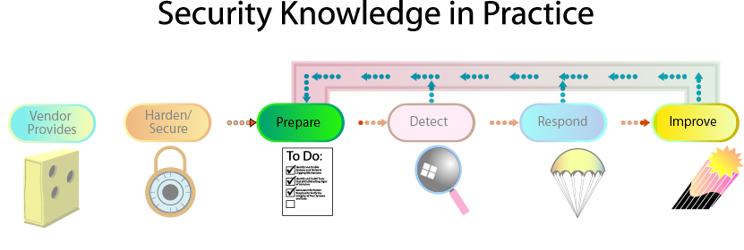
The process repeats for as long as the infoprocs are needed by the enterprise. This transition occurs when the post-mortem ends and the lessons learned from the security event have been recorded for future reference.
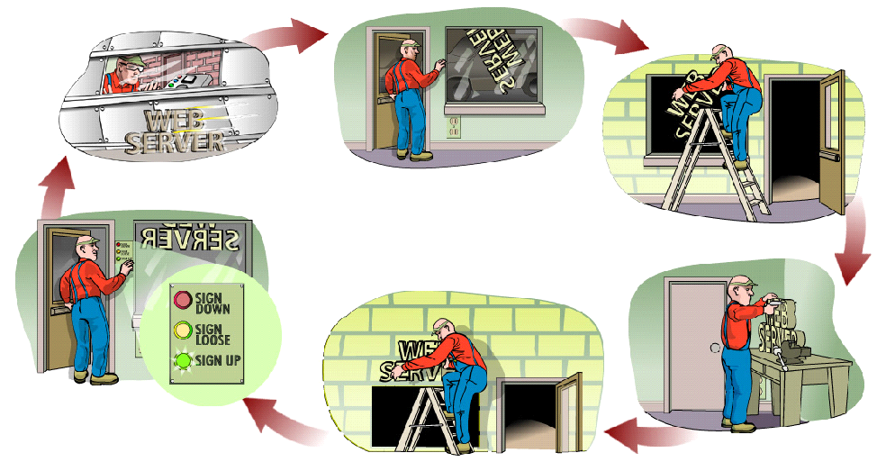
Any changes made during Detect, Respond, and Improve are factored into the system's baseline characterization by iterating back to Prepare. Note that this iteration is different from the initial one because the practices are performed when the system is operating in a production mode.
26. Summary
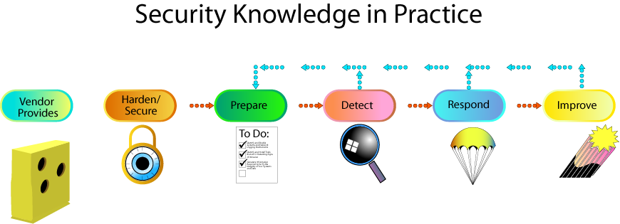
SKiP is a method for initially securing and subsequently sustaining the security state of information assets such as these:
Systems running mission critical applications
Network infrastructure including routers, hubs, switches, etc.
Subsystems or sub-networks such as those providing e-mail services, Web content production and delivery services, perimeter protection services, etc.
A network architecture and topology
Sensitive or proprietary information such as customer data or financial projections
Computer systems installed at home
The steps are as follows:
Vendor Provides systems that are general-purpose and need to be handcrafted to meet an organization's needs.
Harden/Secure the system against known problems.
Prepare the system so that the administrator will be able to spot anomalies that may indicate the occurrence of unknown problems.
Detect those anomalies and other changes, such as the release of a patch, related to the system.
Respond to them when they occur.
Improve the practices and procedures after fixing the systems.
Repeat the process as long as the organization needs to protect the information assets on the system and the system itself. The SKiP Method should be applied until the system is retired.